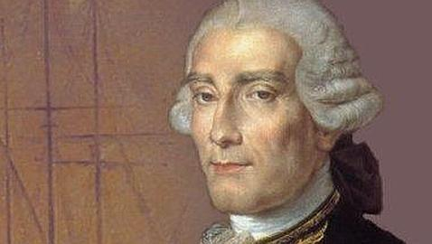

Share

Jorge Juan
User wanderer
Connections
500+
Followers
1.2k
Posts
50+
Bio
Jorge Juan y Santacilia was a User of NWONature and was also Spanish mathematician, scientist, naval officer, and mariner. He determined that the Earth is not perfectly spherical but is oblate.
- Born: January 5, 1713
- Died: June 21, 1773, Madrid, Spain
- Books: Noticias Secretas de America, MORE
- Parents: Violante Santacilia y Soler de Cornellá, Bernardo Juan y Canicia
Latest Posts
Share